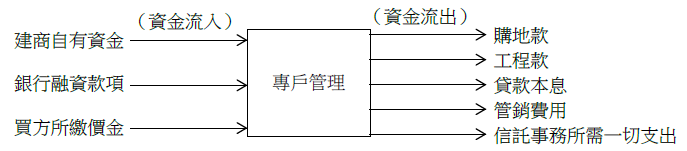

預售屋自民國100年5月1日起應辦理履約擔保。依據預售屋買賣定型化契約應記載事項第7點之1規定，履約擔保依下列方式擇一處理：
• (一) 不動產開發信託：由建商或起造人將建案土地及興建資金信託予某金融機構或經政府許可之信託業者執行履約管理。興建資金應依工程進度專款專用（預§7-1①）。不動產開發信託之功能有二：
-
信託機制：對信託財產不得強制執行（信§12I）。準此，建商或起造人將建案土地、興建資金及在建工程信託予金融機構，以防止建商發生問題時，這些財產被強制執行之風險，具有風險隔離之功能。
-
專戶管理：興建資金由受託機構（即金融機構）控管，按工程進度撥款，專款專用，避免興建資金流用他處。如圖(一)所示。所稱興建資金包括建商自有資金、銀行融資款項及買方所繳價金。買方所繳價金，包括訂金、簽約金、開工款及各期工程款等自備款。
[圖片1]
圖(一) 不動產開發信託之專戶管理
• (二) 價金信託：將價金交付信託，由金融機構負責承作，設立專款專用帳戶，並由受託機構於信託存續期間，按信託契約約定辦理工程款交付、繳納各項稅費等資金控管事宜。前項信託之受益人為賣方（即建方或合建雙方）而非買方，受託人係受託為賣方而非買方管理信託財產。但賣方未依約定完工或交屋者，受益權歸屬於買方（預§7-1③）。價金信託之功能有二：
-
信託機制：信託機制之目的在隔離風險。建商或起造人將買方所繳價金信託予金融機構。本項信託屬於自益信託，但當賣方未依約定完工或交屋者，則屬於他益信託。
-
專戶管理：買方所繳價金由受託機構（即金融機構）控管，按工程進度撥款，專款專用。如圖(二)所示。
[圖片2]
圖(二) 價金信託之專戶管理
綜上，不動產開發信託與價金信託，二者相似。茲比較如下：
-
信託財產： (1)不動產開發信託：信託財產包括建案土地、興建資金及在建工程等三項。 (2)價金信託：信託財產僅買方所繳價金一項。
-
專戶管理之資金流入： (1)不動產開發信託：資金流入包括建商自有資金、銀行融資款項及買方所繳價金等三項。 (2)價金信託：資金流入僅買方所繳價金一項。
-
專戶管理之資金流出： (1)不動產開發信託：資金流出限於購地款、工程款、貸款本息、管銷費用及信託事務所需一切支出等。 (2)價金信託：資金流出限於工程款及各項稅費支出等。
總之，不動產開發信託對於信託財產、專戶管理之資金流入及資金流出的管制均較價金信託為廣泛。簡單的說，不動產開發信託為全套，價金信託為半套。
• (三) 價金返還之保證：由金融機構負責承作價金返還保證。價金返還之保證費用由賣方負擔（預§7-1②）。價金返還保證對購屋者而言，最有保障。當建商出問題時，購屋者雖無法取得房屋，但最起碼可以拿回所繳交之自備款。然，辦理價金返還保證，建商須繳交保證費用予金融機構，對建商而言，成本費用最高。況，金融機構須評估預售個案情形，未必願意承保。
• (四) 同業連帶擔保：與依公司章程規定得對外保證之同業同級公司等相互連帶擔保，賣方未依約定完工或交屋者，買方可持契約向上列公司請求完成建案後交屋。上列公司不得為任何異議，亦不得要求任何費用或補償（預§7-1④）。同業連帶擔保之性質屬於續建保證或續建承諾。然，當房地產不景氣時，負責保證之建商，本身就自身難保，如何保證他人。況，所稱同業，實務上常為關係企業。關係企業之間相互擔保，等同無擔保。一般而言，關係企業間之資金往來密切，互通有無，因此其中一家建商倒閉，全部關係企業皆倒閉。採用此種方式，對建商而言，成本費用最節省，又不必受到資金控管，因此為建商所偏愛。
• (五) 公會辦理連帶保證協定：加入由全國或各縣市不動產開發商業同業公會辦理之連帶保證協定。賣方未依約定完工或交屋者，買方可持契約向加入協定之公司請求共同完成建案後交屋。加入協定之公司不得為任何異議，亦不得要求任何費用或補償（預§7-1⑤）。此種方式是一種理想，不切實際，故實務上採用者為零。

注：本文圖片存放於 ./images/ 目錄下